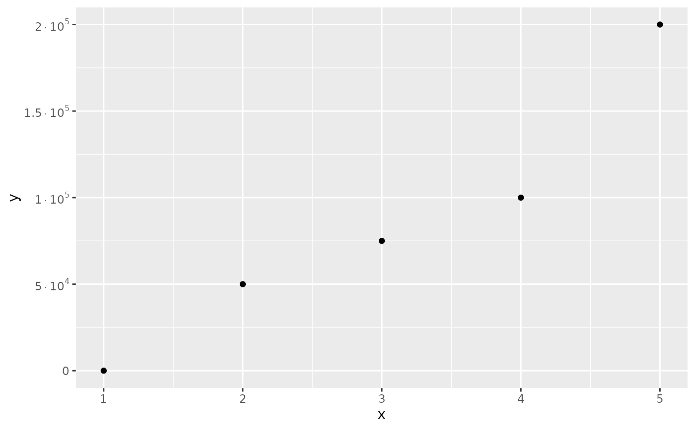
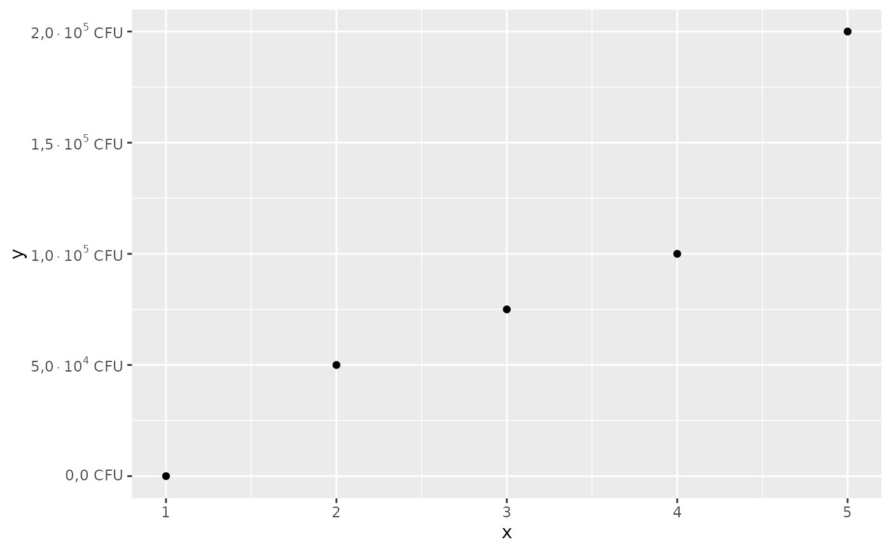
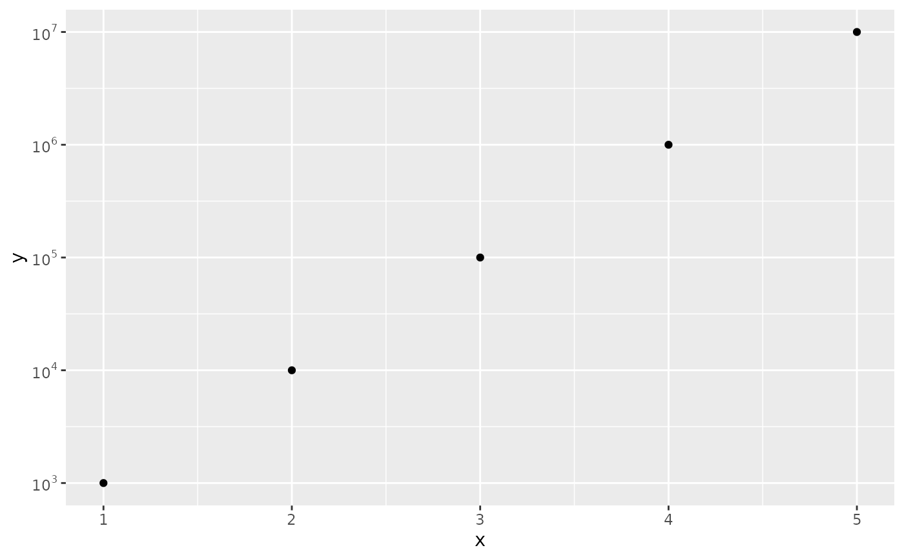

Creates a labeller function that formats numbers in scientific notation using power-of-10 R expressions (e.g., \(2.5\times 10^3\) or \(5\times 10^6\)). Useful for axis labels in ggplot2 when dealing with large numbers or when you want to emphasize the order of magnitude.
Usage
label_power10(
decimal.mark = NULL,
digits = 3,
scale = 1,
prefix = "",
suffix = "",
magnitude_only = FALSE,
...
)Arguments
- decimal.mark
Character used as decimal separator. If
NULL(default), retrieves the setting from [scales::number_options()].- digits
Number of significant digits to show in the mantissa.
- scale
Scaling factor multiplied to the input values. Default is
1.- prefix
Character string to prepend to each label. Default is
"".- suffix
Character string to append to each label. Default is
"".- magnitude_only
Logical. If
TRUE, shows only the power-of-10 part (e.g., \(10^5\) instead of \(1\times 10^5\)). Default isFALSE.- ...
Additional arguments passed to
scales::scientific().
Value
A label function that takes a numeric vector and returns an expression vector suitable for use as axis labels in ggplot2.
Details
The function converts numbers to scientific notation and then formats them as mathematical expressions using the R expression syntax:
For exponent 0: returns the mantissa as-is (e.g., \(5.5\))
For exponent 1: it omits the exponent (e.g., \(1.5\times 10\))
For other exponents: everything is shown (e.g., \(1.5\times 10^3\))
When magnitude_only = TRUE:
For exponent 0: returns \(1\)
For exponent 1: returns \(10\)
For other exponents (positive or negative): returns \(10^{exponent}\)
The function handles negative numbers by preserving the sign and supports custom decimal marks, prefixes, and suffixes.
Examples
library(ggplot2)
# Basic usage with default settings
label_power10()(c(1000, 10000, 100000, -1000))
#> expression(1 %*% 10^3, 1 %*% 10^4, 1 %*% 10^5, -1 %*% 10^3)
# Use in ggplot2
ggplot(
data.frame(x = 1:5, y = c(1, 50000, 75000, 100000, 200000)),
aes(x, y)
) +
geom_point() +
scale_y_continuous(labels = label_power10())

# Use in ggplot2 with options
ggplot(
data.frame(x = 1:5, y = c(1, 50000, 75000, 100000, 200000)),
aes(x, y)
) +
geom_point() +
scale_y_continuous(labels = label_power10(decimal.mark = ",", digits = 2, suffix = " CFU"))

# Magnitude only for cleaner labels with log scales
ggplot(
data.frame(x = 1:5, y = c(1000, 10000, 100000, 1000000, 10000000)),
aes(x, y)
) +
geom_point() +
scale_y_log10(labels = label_power10(magnitude_only = TRUE))
